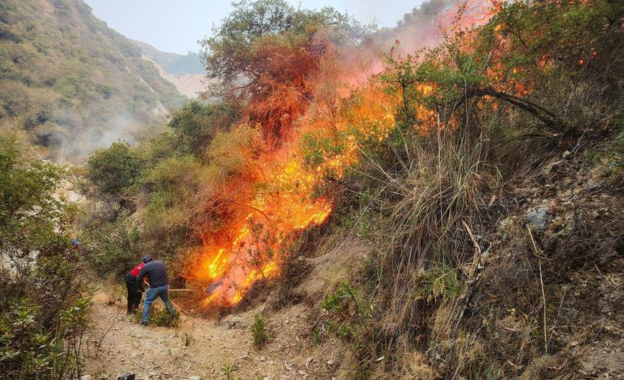

España
El sur de España registra temperaturas récord de 30°C en pleno octubre, aumentando el riesgo de incendios forestales y genera preocupación por la sequía

Esta situación ha encendido las alarmas por el riesgo de incendios forestales y la falta de recursos hídricos en varias zonas rurales. Las autoridades han pedido que se extremen las precauciones y han emitido recomendaciones para ahorrar agua.